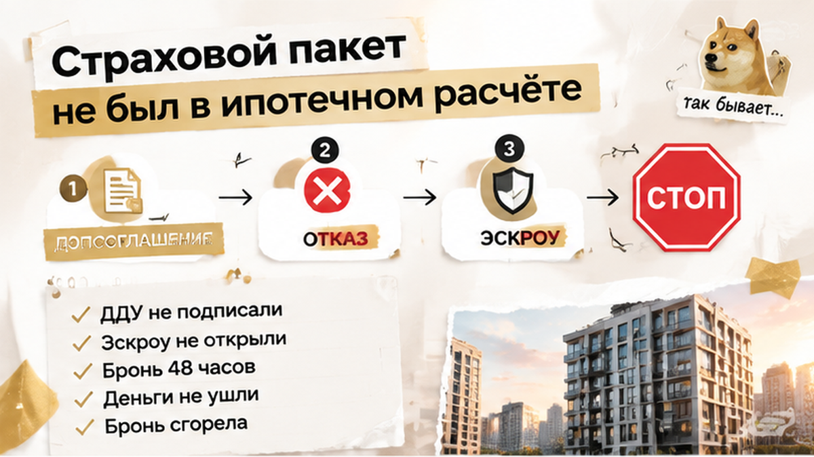
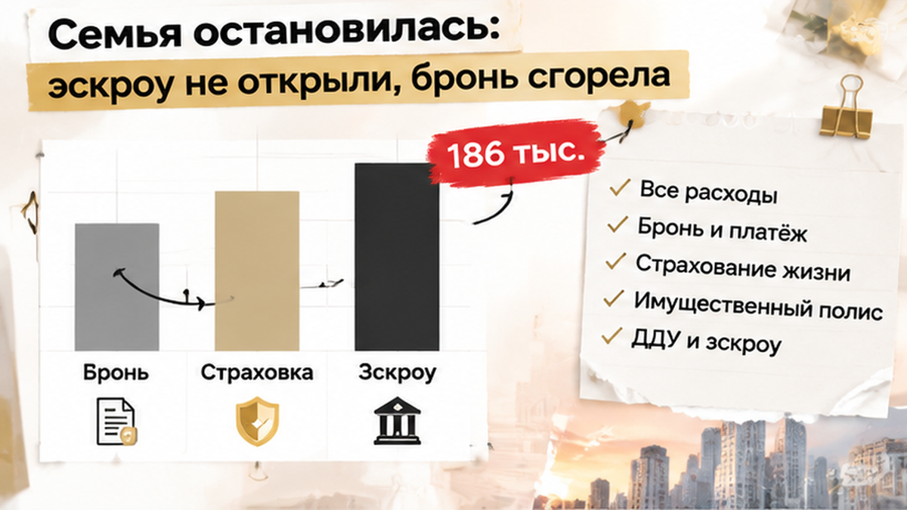
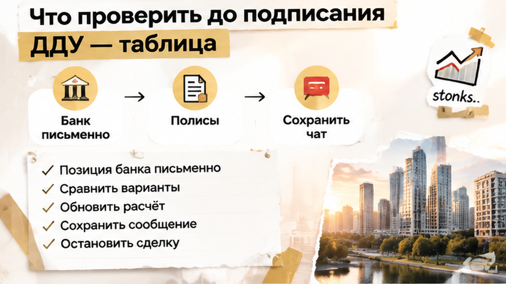

Перед визитом в банк семья свела в один расчёт первоначальный взнос, ипотечный платёж, оформление и новые 186 000 ₽. Решение стало арифметическим: допсоглашение не подписывать, пока банк письменно не объяснит необходимость полиса и последствия отказа.
В назначенный день ДДУ не подписали. Счёт эскроу не открыли, основная сумма сделки туда не ушла. Через 48 часов бронь аннулировали.
Квартира не состоялась на предложенных условиях, но деньги по основной сделке не успели попасть на эскроу. Бронь сгорела по условиям договора, а семья остановилась до того, как новый расход превратился в подписанное обязательство и платёж. Условия бронирования каждый раз нужно проверять отдельно: когда оно прекращается, что оплачено и предусмотрен ли возврат.
Страхование жизни и здоровья заёмщика по закону не является обязательным. При этом кредитный договор может связывать отказ от полиса с повышением ставки. Имущественное страхование регулируется отдельно, а обязанность и момент её возникновения нужно проверять в условиях залога и документах банка.
Пакет от офиса продаж или его партнёра сам по себе не доказывает, что именно его требует кредитор. Если появляется формулировка «обязательный пакет», стоит запросить письменную позицию банка, а не оплачивать его вслепую.
Проблема может быть и в документах на сам объект. Например, при смене юридического лица застройщика банк может остановить открытие эскроу до проверки новой версии документов. А одобрение ипотеки не гарантирует регистрацию: это видно в разборе о ситуации, когда регистрацию отменили после одобрения кредита.
В этой семье решение оказалось неприятным, но контролируемым: бронь пропала, зато основная сумма сделки осталась у покупателей. Сначала должны сойтись документы, требования банка и полный бюджет, затем открывается эскроу.
Страховку на 186 тысяч вынесли в допсоглашение накануне ДДУ — вы бы доплатили ради квартиры или развернулись, даже если бронь сгорит?

До ДДУ стоит собрать всю цепочку расходов — от брони до открытия и пополнения эскроу.
| Что проверить | Где искать подтверждение | Какой вопрос задать | Что сохранить до визита |
|---|---|---|---|
| Первоначальный взнос и платёж по ипотеке | Кредитный договор и расчёт банка | Не изменились ли ставка, сумма кредита и ежемесячный платёж? | Актуальный расчёт с датой и версией документа |
| Страхование жизни и здоровья | Кредитный договор и индивидуальные условия | Обязателен ли полис или отказ только меняет ставку? | Письменный ответ банка и требования к полису |
| Имущественное страхование | Условия залога и страхования | С какого момента возникает обязанность и что именно страхуется? | Перечень рисков, страховая сумма, срок и периодичность оплаты |
| Пакет на 186 000 ₽ или другая крупная строка | Допсоглашение, заявление и счёт партнёра | Что входит в сумму, на какой срок и можно ли отказаться? | Полный текст документа и расчёт каждой услуги |
| Выбор страховой компании | Требования банка к страховщику | Допускается ли альтернативный страховщик с нужным рейтингом и параметрами полиса? | Список требований банка, а не только предложение офиса продаж |
| Бронь квартиры | Договор бронирования и платёжные документы | Когда бронь прекращается и что происходит с оплатой? | Подписанный договор, чек и переписка об условиях |
| ДДУ и эскроу | Проект ДДУ и банковские документы | Какие суммы и в какой момент поступают на эскроу? | Финальная версия ДДУ и подтверждение открытия счёта |

Расходы лучше разнести отдельными строками: бронь, первоначальный взнос, страховки, оценка, госпошлина и прочие платежи. Новый пункт из мессенджера накануне ДДУ нужно сопоставить с прежним расчётом, допсоглашением и условиями бронирования. Переписку и файлы сохраните до окончания сделки.
Письменно спросите банк, требуется ли предложенный полис, как изменится ставка при отказе и допускается ли другая страховая компания. Если банк говорит только о влиянии личного страхования на ставку, а офис продаж настаивает на своём партнёре, это два разных требования.
Период охлаждения не стоит считать автоматическим способом вернуть деньги. Возможность возврата зависит от вида продукта, текста договора, страхового случая и уже оказанных услуг. Сначала нужно понять, что входит в пакет, на какой срок он оформляется и кто получает платёж.
Рабочая последовательность простая: получить позицию банка письменно, сравнить варианты страхования, обновить полный расчёт и только потом принимать решение по ДДУ. Если цифры появились впервые вечером перед подписанием, процесс можно остановить и разобраться, даже если это означает потерю брони.